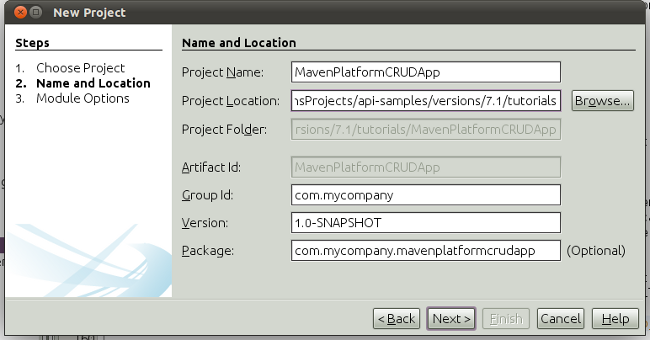
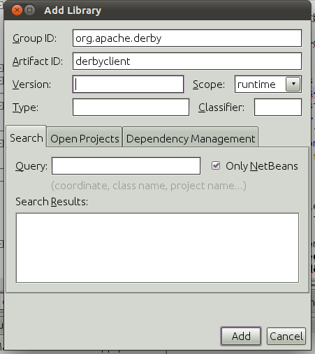

Apache NetBeans
Apache NetBeansLatest release
NetBeans Platform CRUD Tutorial Using Maven
| This tutorial needs a review. You can edit it in GitHub following these contribution guidelines. |
Welcome to the NetBeans Platform!
This document demonstrates how to use the Maven build framework to create a simple NetBeans Platform application that can read and write to a database. In this document you will use Maven archetypes to create the NetBeans Platform application and module, and the Swing UI toolkit and "Matisse" GUI Builder to create window components.
This document is based on the Ant-based NetBeans Platform CRUD Application Tutorial and can be used to understand some of the differences between using Ant and Maven to develop NetBeans Platform applications. After you understand how Maven is different from Ant, you can easily proceed through other tutorials on the NetBeans Platform Learning Trail.
| You do not need to download Maven because it is bundled with the IDE. Optionally, use your own download of Maven, in which case use the Options window to configure your Maven settings. |
Before starting this tutorial you may want to familiarize yourself with the following documentation.
Creating the NetBeans Platform Application
In this section you use the New Project wizard to create a NetBeans Platform application from a Maven archetype.
-
Choose File > New Project (Ctrl-Shift-N) to open the New Project wizard. Select NetBeans Application from the Maven category:

Figure 1. screenshot
Click Next.
-
Type MavenPlatformCRUDApp for the Project Name and set the Project Location:

Figure 2. screenshot
Click Next.
-
Select the version of the NetBeans APIs you’d like to use and type the name of a NetBeans module that you’d like to be created together with the application, in this case MavenPlatformCRUDApp-dbaccess:

Figure 3. screenshot
Click Finish.
When you click Finish, the IDE creates the following Maven project types:
-
app. The app project enumerates included modules; permits interactive runs; produces various kinds of packaging, such as ZIP by default, but optionally JNLP, NBMs, and in the future perhaps OSGi; holds functional tests. Each module project specifies its own compile dependencies, while the app project’s dependencies are anything additional that should be present at runtime. For example, that includes, by default, the whole platform cluster, that is, the set of modules constituting the "platform" cluster. The app project could include other clusters, or subsets of clusters, or whatever plugins you want included in your app which are not used as compilation dependencies. At a minimum, core.startup and its transitive dependencies are included.
-
branding. This project contains the global resources used for branding the application, such as the splash screen.
-
dbaccess. The project that will contain the Java sources you will create in the next section.
-
parent. This project is a Maven reactor project for the NetBeans Platform application, which lists the modules to include and the location of the project’s repositories. This project does not contain any sources. The IDE generates the modules containing the sources and resources in sub-directories of this project.

Figure 4. screenshot
Creating the Database Connection
In this section you will generate some entity classes from tables in the Java DB database. To create the entity classes and to use the Java Persistence API (JPA) in your application, you need to have access to a database server and the JPA persistence provider libraries. This tutorial uses the JavaDB database server, but you can configure the application to use other database servers.
The easiest way to make the resources available is to register an instance of GlassFish that is bundled with the IDE. The Java DB database server, a sample database and the JPA persistence provider are included with the GlassFish server. Before you create the entity classes, start the Java DB by performing the following steps.
-
In the Services window, expand the Servers node and check that a GlassFish instance is registered.
-
Expand the Database node, right-click the database connection node for the app database on Java DB (
jdbc:derby://localhost:1527/sample [app on APP]) and choose Connect.
When you choose Connect, the IDE will start the database if not already started.
Adding the DerbyClient as a Runtime Dependency
In this section you will add derbyclient.jar library as a dependency.
-
Right-click the Dependencies node of the dbaccess module and choose Add Dependency. The Add Library dialog appears.
-
Specify the library by typing org.apache.derby for the "Group ID" and derbyclient for the "Artifact ID" and select runtime from the Scope drop-down:

Figure 5. screenshot
Click Add.
-
Expand the Runtime Dependencies node in the Projects window and you can see that the
derbyclientlibrary is listed as a dependency:

Figure 6. screenshot
-
Open the POM file, type <version> tags in the new dependency declaration, and call up code completion (Ctrl-Shift-N), and select the latest version available:

Figure 7. screenshot
You have now registered the Derby database dependency for your module.
Generating Entity Classes From the Database
In this section you will use a wizard to generate entity classes in the dbaccess module.
-
Right-click the Source Packages of the dbaccess module and choose New > Other. Select Entity Classes from Database in the Persistence category:

Figure 8. screenshot
Click Next.
-
Select the Java DB sample database from the Database Connection drop-down list. Select the Customer table from the Available Tables list and click Add. When you click Add, the related tables, such as DiscountCode, which could vary depending on your version of the database, are also added to the list of Selected Tables list:

Figure 9. screenshot
Click Next.
-
Type com.mycompany.mavenplatformcrudapp.dbaccess for the Package name. Make sure that the Create Perisistence Unit and Generate Named Query Annotations are selected:

Figure 10. screenshot
-
Click Finish. When you click Finish, the IDE generates an entity class for each selected table. The IDE also generates the
persistence.xmlfile in theMETA-INFpackage under the Other Sources node in thesrc/main/resourcesdirectory:

Figure 11. screenshot
-
Now let’s expose two packages from the dbaccess module. These packages will be reused by other modules in the application. Right-click the module, choose Properties, select "Public Packages, and then click the two checked checkboxes below:

Figure 12. screenshot
After exiting the dialog above, notice that the POM exposes the two packages you selected:
<build>
<plugins>
<plugin>
<groupId>org.codehaus.mojo</groupId>
<artifactId>nbm-maven-plugin</artifactId>
<extensions>true</extensions>
<configuration>
<publicPackages>
*<publicPackage>com.mycompany.mavenplatformcrudapp.dbaccess</publicPackage>
<publicPackage>javax.persistence</publicPackage>*
</publicPackages>
</configuration>
</plugin>
<plugin>
<groupId>org.apache.maven.plugins</groupId>
<artifactId>maven-jar-plugin</artifactId>
<configuration>
<!-- to have the jar plugin pickup the nbm generated manifest -->
<useDefaultManifestFile>true</useDefaultManifestFile>
</configuration>
</plugin>
</plugins>
</build>In this section, you created a module that now contains entity classes for the tables you’d like to access, together with a persistence.xml file providing the data access information. You’ve also exposed the packages containing the classes that you’d like other modules to use.
Creating the Viewer
In this section, we create a simple prototype GUI component that accesses the data and displays it.
-
Create a new module:

Figure 13. screenshot
Click Next.
-
Name the module MavenPlatformCRUDApp-Viewer and specify a project location:

Figure 14. screenshot
Click Next.
-
Right-click the module and choose New | Window. Create a window in the "explorer" position and let it open when the application starts. Click Next. Set "Viewer" as the class name prefix. Click Finish.
-
In the Source tab of the new window, redefine the constructor as follows:
public ViewerTopComponent() {
initComponents();
setName(Bundle.CTL_ViewerTopComponent());
setToolTipText(Bundle.HINT_ViewerTopComponent());
setLayout(new BorderLayout());
JTextArea area = new JTextArea();
add(area, BorderLayout.CENTER);
EntityManager entityManager = Persistence.createEntityManagerFactory("com.mycompany_MavenPlatformCRUDApp-dbaccess_nbm_1.0-SNAPSHOTPU").createEntityManager();
Query query = entityManager.createNamedQuery("Customer.findAll");
List<Customer> resultList = query.getResultList();
for (Customer c : resultList) {
area.append(c.getName() + " (" + c.getCity() + ")" + "\n");
}
}Red underlines will appear throughout the code above. If you click one of the yellow light-bulbs in the left sidebar, you can search for JARs needed from the Maven repository, as shown below:

Figure 15. screenshot
The Search dialog is as follows:

Figure 16. screenshot
For each red underline in the code, search for the missing dependency and set the dependency when you find it.
-
When all dependencies are satisfied, run the application and you should see this:

Figure 17. screenshot
The simple prototype is finished. You’re using very few NetBeans APIs at the moment, but you’re able to retrieve data from your database and display it in your view component.
Creating the Editor
In the same way as described in the previous section, create another module. This one is named MavenPlatformCRUDApp-editor. Add a new window, named EditorTopComponent, to be displayed in the editor position of the application.
When you run the application, you should see this:

Figure 18. screenshot
Open the Properties window, from the Window menu, and you’ll see the start of a more complex NetBeans Platform application:

Figure 19. screenshot
Now that you have completed the steps above, you can refer to the Ant-based NetBeans Platform CRUD Application Tutorial, since all the Java code in that tutorial is applicable to the application you are creating here.
Now that you have a basic understanding of how developing with Maven is different from Ant, you can easily proceed through other tutorials on the NetBeans Platform Learning Trail and apply them to your Maven scenarios.
See Also
This concludes the CRUD Tutorial. This document has described how to use the Maven build framework to create a new NetBeans Platform application with CRUD functionality. For more information about creating and developing applications, see the following resources.
If you have any questions about the NetBeans Platform, feel free to write to the mailing list, dev@platform.netbeans.org, or view the NetBeans Platform mailing list archive.